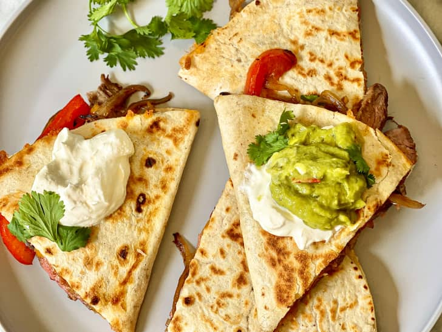

Loaded Steak Quesadillas

Seasoned and thinly sliced flank or skirt steak make the best steak quesadillas. While it’s true that any cut can work, flank steak and skirt steak check all the boxes: in addition to being reasonably priced and widely available, both cuts are super flavorful and quick-cooking on the stovetop.
Ingredients:
- 1 medium yellow onion
- 1 medium red bell pepper
- 16 ounces of mild cheddar cheese
- 1 pund flank
- 1 teaspoons of kosher salt
- 1 teaspoons of gound cumin
- 2 tablespoon of vegetable oil
- 4 inch flour tortillas
Cooking Instructions:
-
Thinly slice 1 medium yellow onion. Core, seed, and thinly slice 1 medium bell pepper. Grate 16 ounces Monterey Jack, mild cheddar cheese, or a combination on the large holes of a box grater (about 5 cups). Pat 1 pound flank or skirt steak dry with paper towels, then season all over with 1 teaspoon of the kosher salt, 1 teaspoon ground cumin, and 1/4 teaspoon black pepper. Cut the skirt steak crosswise into 2 to 3 pieces to fit in the skillet if needed.
-
Heat 1 tablespoon of the vegetable oil in a 12-inch cast iron skillet or heavy frying pan over medium-high heat until just starting to smoke. Working in 2 batches if needed, place the steak in the pan and cook undisturbed for 1 minute. Flip and continue to cook, flipping every minute, until both sides have a nice char, and the steak registers 130°F for medium-rare, about 4 minutes total, or 140°F for medium, about 6 to 8 minutes total. Transfer the steak to a clean cutting board, loosely cover with aluminum foil, and let rest while you cook the peppers and onions.
-
Reduce the heat to medium and add the remaining 1 tablespoon vegetable oil to the skillet. Add the onion, the remaining 1/4 teaspoon kosher salt, and a few grinds black pepper. Cook, stirring occasionally, until softened and lightly charred around the edges, about 5 minutes. Transfer the onions and peppers to a bowl. Wipe the skillet clean.
-
Place 4 (10-inch) flour tortillas on a work surface. Sprinkle 1/2 cup of the shredded cheese onto one half of each tortilla, leaving a 1/2-inch border from the edge. Divide the steak, peppers, and onions over the cheese. Sprinkle the remaining cheese over the steak and vegetables. Fold each tortilla in half over the filling and gently press down.
-
Brush the skillet with a thin layer of vegetable oil. Add 2 quesadillas to the pan and cook over medium-low heat until the cheese is mostly melted and the bottoms are browned, 1 to 2 minutes. Flip with a thin metal spatula and cook until the cheese is melted and the second side is browned.
-
Transfer the quesadillas to a cutting board. Brush the skillet with more oil and repeat cooking the remaining quesadillas. Cut the quesadillas into wedges. Serve with sour cream, salsa, and/or guacamole if desired.